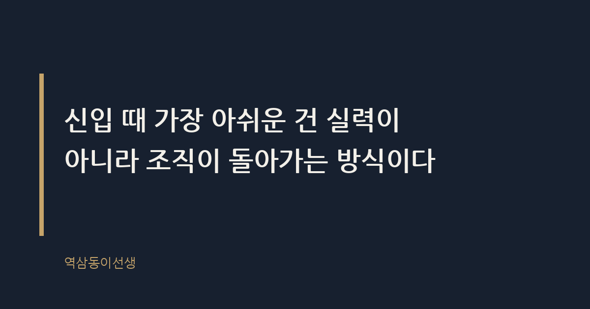
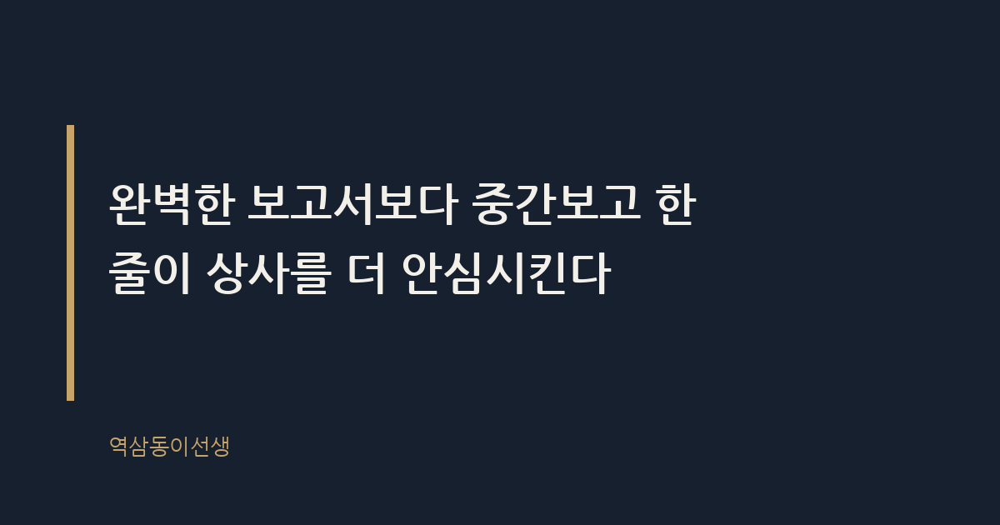

주제 10년 차 직장인이 신입 때 알았으면 좋았을 것 (evergreen / office)
제목 후보
메타 설명 보고 타이밍부터 평판까지, 회사가 안 알려주는 암묵지를 정리했다.
라벨 직장생활, 신입사원, 회사생활꿀팁, 직장인조언, 신입사원적응, 보고잘하는법, 회사생활, 직장인에세이, 사회초년생, 커리어팁, 오피스라이프, 신입사원체크리스트
실용 자산 체크리스트 — 신입 시절 놓치기 쉬운 행동을 순서대로 점검하는 체크리스트가 실제로 복사해서 써먹기 좋아 검색 의도에 부합한다
발행 전 팩트체크
이미지 (Blogger 편집기에 드래그해 넣으세요)
도입부 사진 · ⓒ ignartonosbg / Pexels


얼마 전 팀 막내가 커피를 사겠다며 회의실로 불러냈다. 입사 1년 차, 처음으로 단독으로 맡은 프로젝트가 전날 엎어진 뒤였다. 표정이 많이 상해 있었다. 무슨 말을 해줘야 하나 잠깐 고민하다가, 결국 내 신입 시절 이야기를 꺼냈다. 첫 보고서를 밤새 완벽하게 만들어 갔다가 팀장에게 "이거 왜 지금 가져왔어"라는 말을 들었던 날 이야기였다.
이야기를 하다 문득 깨달았다. 그때 누가 딱 이 말 한마디만 해줬어도 몇 달은 덜 헤맸을 텐데, 하는 아쉬움이었다. 회사를 오래 다니면서 신입 때 알았으면 좋았겠다 싶은 건 의외로 거창한 업무 스킬이 아니다. 회사라는 조직이 실제로 돌아가는 방식, 그 암묵적인 규칙들이다.
신입사원 교육이란 업무 매뉴얼과 조직도를 외우는 시간이다. 하지만 정작 회사 생활을 좌우하는 것은 매뉴얼에 없다. 누구에게 먼저 물어봐야 하는지, 메신저로 될 말과 전화로 해야 할 말이 따로 있다는 것, 회의 전에 미리 의견을 돌려야 한다는 것 같은 암묵지다.
아무도 알려주지 않는 데는 그만한 사정이 있다. 사수도 그걸 누가 가르쳐준 게 아니라 부딪히며 혼자 알아낸 사람이라서다. 본인이 체득한 감각을 말로 설명하는 건 생각보다 어려운 일이다. 그래서 "알아서 눈치껏 해"라는 무책임해 보이는 말이 사실은 "나도 설명을 못 하겠다"는 뜻일 때가 많다.
게다가 사수는 바쁘다. 본인 업무와 신입 육성을 동시에 하는 구조에서, 친절한 설명보다 빠른 결과물이 우선순위에서 밀릴 수밖에 없다. 이 구조를 모르면 신입은 "나만 못 따라가나" 자책하게 되고, 사수는 "쟤는 왜 저렇게 기본이 없나" 답답해진다. 서로 억울한 평행선이다.
이 평행선은 보통 한쪽이 먼저 "저 이거 잘 모르겠는데 여쭤봐도 될까요"라고 묻는 순간 끊어진다. 신입 때는 그 한마디가 무능함을 들키는 것처럼 느껴지지만, 실제로는 정반대다. 질문의 타이밍과 질이 오히려 "이 친구는 스스로 상황을 파악하고 있구나"라는 인상을 남긴다.
신입 때 가장 많이 하는 실수는 완벽한 결과물을 만들어서 한 번에 보고하려는 것이다. 나도 그랬다. 밤새 자료를 모으고 다듬어서 금요일 오후에 당당하게 보고서를 들고 갔더니, 팀장 반응은 "이거 화요일에 물어봤을 때 왜 말 안 했어"였다.
상사가 궁금한 건 완성본이 아니라 진행 상황이다. 중간보고란 작업이 어느 방향으로 가고 있는지를 짧게 공유해서 상사가 방향을 수정할 기회를 주는 것이다. 이걸 생략하면 상사는 결과가 나올 때까지 불안해하고, 방향이 틀렸을 경우 되돌릴 시간도 없어진다.
완벽한 보고서보다 중간보고 한 줄이 상사를 더 안심시킨다. "지금 이렇게 진행 중인데 방향 맞을까요" 이 한 문장이면 충분하다. 신입 때는 이걸 보고할 거리가 안 된다고 생각해서 생략하는데, 사실 상사 입장에서는 그 한 줄이 가장 아쉬운 정보다.
마케팅팀에 있을 때 신입 두 명을 동시에 받은 적이 있다. 한 명은 중간보고를 꼬박꼬박 했고, 한 명은 결과물이 나올 때까지 아무 말이 없었다. 두 사람의 결과물 완성도는 비슷했는데, 평가는 갈렸다. 중간보고를 한 신입에게는 "같이 만든 느낌"이 남았고, 아닌 신입에게는 "혼자 알아서 한 결과물"이라는 거리감이 남았다. 과정을 보여주는 것과 결과만 던지는 것, 체감되는 신뢰도는 생각보다 크게 차이가 난다.
신입 때는 모든 소통을 메신저로 해결하려는 경향이 있다. 기록이 남으니 안전해 보이고, 상대방 반응을 바로 보지 않아도 되니 마음이 편하다. 하지만 메신저가 적합한 소통과 전화 혹은 대면이 필요한 소통은 분명히 다르다.
단순 확인, 자료 공유, 일정 조율은 메신저로 충분하다. 반대로 실수를 보고하거나, 의견 차이가 있거나, 상대방의 감정이 상할 여지가 있는 내용은 목소리나 얼굴을 보고 전달하는 게 맞다. 텍스트는 어조가 전달되지 않아서, 똑같은 문장도 받아들이는 사람에 따라 차갑게 읽히거나 날카롭게 읽히기 쉽다.
예전에 한 신입이 거래처와의 일정 문제를 장문의 메신저로 설명하다가 오해를 산 적이 있다. 전화 한 통이면 1분에 끝날 일이, 메신저로는 서로 핑퐁만 열 번 넘게 오가며 감정만 상했다. 급하거나 민감한 일일수록 글자보다 목소리가 빠르고 안전하다는 걸, 그 신입도 그날 체감했다.
신입 때는 틀린 말을 할까 봐 회의에서 입을 다문다. 나도 입사 초반엔 회의 내내 메모만 했다. 그런데 몇 년 지나 인사평가 시즌에 다른 팀장들과 이야기를 나누다 알게 된 게 있다. 무능해 보일까 봐 침묵하는 신입은, 사실 무능해 보이는 게 아니라 아예 존재감이 없어진다는 것이다.
틀린 의견을 낸 신입은 다음에 고쳐서 말하면 되지만, 아무 말도 안 한 신입은 평가할 데이터 자체가 없다. 연말 인사평가 테이블에서 이름이 나올 때 "그 친구 어때" 물으면 누군가는 "의견 내는 거 보니 생각이 있더라"고 말하지만, 침묵한 신입에 대해서는 할 말이 없어 침묵이 돌아온다.
회의에서 발언이란 정답을 맞히는 행위가 아니라 내가 이 문제를 고민했다는 증거를 남기는 행위다. 완벽한 의견이 아니어도 괜찮다. "이 부분은 잘 모르겠는데 혹시 이런 방향은 어떨까요" 정도의 조심스러운 한마디도 존재감을 남긴다.
신입 때는 사수가 모든 걸 알려줄 거라 기대한다. 그런데 사수도 자기 몫의 일이 있는 평범한 직장인이다. 사수에게 모든 질문을 몰아주면 사수도 지치고, 신입도 사수의 스타일 안에서만 배우게 된다.
옆에서 지켜보니 결국 잘 크는 신입은 사수뿐 아니라 옆 팀 대리, 타 부서 과장, 심지어 거래처 담당자에게도 질문을 던지는 사람이었다. 같은 문제를 두고 여러 사람의 답을 들으면, 그 안에서 공통분모가 보인다. 그게 그 조직의 진짜 기준이다.
사수 한 사람의 방식을 정답이라 믿고 따라가다 사수가 바뀌거나 퇴사하면 길을 잃는 사람을 여럿 봤다. 사수는 입구를 열어주는 선배이지, 평생 따라야 할 스승이 아니다.
신입 때는 실수를 들키지 않으려고 혼자 수습하려다 일을 키우는 경우가 많다. 오탈자 정도는 혼자 고치면 되지만, 거래처에 잘못된 숫자를 보냈거나 일정을 혼동한 경우라면 이야기가 다르다. 이런 실수는 혼자 끌어안는 시간이 길어질수록 피해가 커진다.
실수를 보고할 때 가장 먼저 해야 할 말은 변명이 아니라 사실이다. "제가 실수로 이렇게 보냈는데, 지금 이런 상황입니다. 이렇게 수습하면 될까요"가 순서다. 원인 분석이나 반성은 그다음이다. 많은 신입이 이 순서를 거꾸로 해서, 사과와 변명을 먼저 늘어놓다가 정작 상사가 가장 궁금해하는 "지금 상황이 어떤지"를 늦게 전달한다.
신입 시절 내가 거래처 견적서에 0을 하나 빼고 보낸 적이 있다. 그걸 알아챈 순간 팀장에게 바로 달려갔다. "죄송합니다"보다 먼저 "지금 이런 상황이고, 거래처에는 아직 연락이 안 갔습니다"라고 말했다. 팀장은 그 순서를 칭찬했다. 실수 자체보다 실수를 알리는 속도와 순서가 그 사람의 평판을 결정한다는 걸 그날 배웠다.
신입사원 평판이란 입사 초반에 만들어져서 이후로는 잘 바뀌지 않는 조직 내 이미지다. 사람들은 첫인상을 쉽게 안 바꾼다. 인사팀에 있을 때 중간 경력자들의 평판 변화를 지켜본 적이 있는데, 초반 3개월에 형성된 이미지가 1년이 지나도 그대로 따라다니는 경우가 많았다.
평판이 초반에 고정되는 이유는 사람들이 정보를 접할 때 가장 먼저 들어온 인상을 기준점으로 삼기 때문이다. 이후에 나오는 행동은 그 기준점을 확인하는 용도로만 쓰인다. 그래서 신입 때 작은 실수 하나보다 작은 약속 하나를 어기는 게 더 치명적이다. 능력은 나중에 쌓이지만 신뢰는 처음부터 쌓아야 한다.
씁쓸하면서도 꽤 인상적인 건, 이걸 알고 움직이는 신입과 모르고 움직이는 신입의 1년 차 모습이 완전히 다르다는 점이다. 똑같이 성실한데 한쪽은 "믿을 만한 친구"가 되고 한쪽은 "아직 지켜봐야 할 친구"로 남는다. 차이는 능력이 아니라 이 구조를 알았는지 몰랐는지였다.
업무 시간에만 평가가 쌓인다고 생각하면 오산이다. 점심시간에 누구와 앉는지, 회식에서 어떤 태도를 보이는지도 은근히 기억에 남는다. 꼭 친화력이 좋아야 한다는 뜻은 아니다. 억지로 친한 척할 필요는 없지만, 먼저 인사를 건네고 작은 대화에 성의 있게 응하는 태도는 분명히 다르게 읽힌다.
신입 때 점심을 늘 혼자 먹던 동기가 있었다. 본인은 업무에 집중하고 싶어서였다고 했는데, 팀 분위기 안에서는 "거리를 두는 사람"으로 읽혔다. 반대로 매번 먼저 같이 먹자고 묻던 동기는 특별히 사교적이지 않았는데도 "편한 사람"이라는 평가를 받았다. 사소한 선택 하나가 생각보다 오래 남는다.
그날 회의실에서 막내에게 해준 말은 결국 이 모든 걸 한 줄로 줄인 것이었다. 완벽하게 하려고 애쓰지 말고, 지금 어디쯤 왔는지를 자주 알려달라고. 그게 신입 때 내가 가장 늦게 깨달은 것이었다.
Q. 신입 때 아무도 안 알려줘서 혼자 한참 헤맸던 경험, 있으신가요?